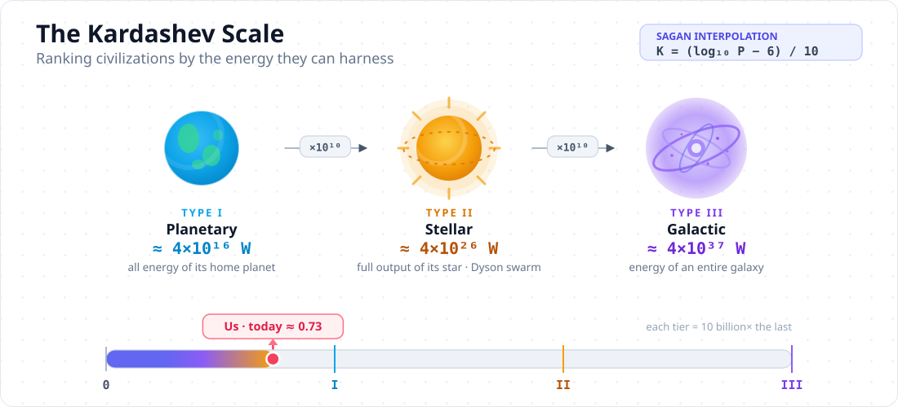
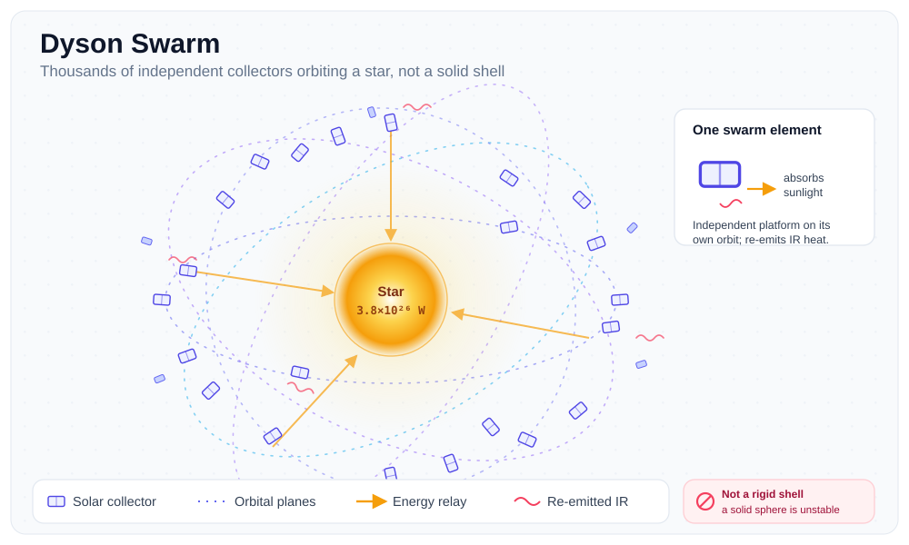
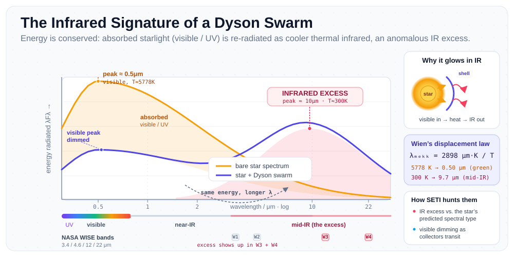

I've been sitting on this topic for a while, honestly. It started when I was procrastinating on a systems paper and fell into a rabbit hole about how we'd measure the technological maturity of an alien civilization. Three hours later I had filled half a notebook with numbers about stellar energy output and orbital mechanics. That's the kind of rabbit hole worth writing about.
In 1964, Soviet astronomer Nikolai Kardashev proposed a framework for classifying civilizations not by their politics or culture, but by something brutally objective: energy consumption. The logic is sound. Energy is the one constraint that binds every process in the universe, from running a GPU cluster to terraforming a planet. The more energy you can harness and direct, the more computationally and physically complex your civilization can be. Kardashev gave us three tiers. A Type I civilization masters all the energy available on its home planet, roughly 4 times 10 to the power of 16 watts for something like Earth. Type II captures the full output of its host star, around 4 times 10 to the power of 26 watts for the Sun. Type III scales that up to an entire galaxy, something on the order of 4 times 10 to the power of 37 watts. Each step is not incremental. It is ten billion times the previous one.
Carl Sagan later extended Kardashev's framework with an interpolation formula that let you place any civilization at a continuous point on the scale rather than forcing discrete jumps. By that formula, humanity currently sits at roughly 0.73. We are not even a Type I civilization yet. We are a fractional Type I, burning fossil fuels and arguing about grid infrastructure, while the Sun dumps 1.7 times 10 to the power of 17 watts onto our atmosphere every single second and we use a negligible fraction of it. That number is sobering in a way most technology coverage isn't.
What really fascinates me about the Kardashev Scale is that it reframes civilizational progress as an engineering problem. Type II is not just a scientific achievement, it requires building something at stellar scale. And the structure most seriously proposed for that is the Dyson sphere.
Freeman Dyson published his original idea in 1960 in a paper titled "Search for Artificial Stellar Sources of Infrared Radiation" in the journal Science. The core argument was elegant: any technological civilization that wants to keep growing will eventually exhaust the energy of its home planet and face a hard ceiling. The only rational solution is to move outward and capture more of the star's total output. Dyson proposed surrounding a star with a shell of structures that intercept its light. The Sun radiates about 3.8 times 10 to the power of 26 watts in all directions. Earth, sitting 150 million kilometers away, intercepts roughly one billionth of that. Building collectors throughout the orbital shell around the Sun would give you access to nearly all of it.
One thing Dyson himself was clear about, and which popular science gets wrong constantly, is that he never imagined a solid rigid shell. A rigid shell the size of Earth's orbit would be structurally impossible under the material strength of anything we know. What Dyson actually described was a swarm, a massive cloud of independently orbiting platforms, solar collectors, habitats, and energy-relay stations distributed across a spherical region around the star. The phrase "Dyson Sphere" stuck in pop culture but the technically accurate term for what Dyson described is a Dyson Swarm. The distinction matters a lot from an engineering standpoint.

The engineering challenges are genuinely staggering, and I find myself thinking about them from first principles whenever I revisit this topic. First is materials. Building enough collector area to meaningfully intercept solar output requires dismantling planetary-scale masses of raw material. The inner planets of the solar system, particularly Mercury and Venus, are the usual candidates since they are close to the Sun and have no biosphere to worry about. Second is orbital mechanics. You cannot just park a million solar collectors in the same orbit. They will collide. Managing a Dyson Swarm requires solving an orbital coordination problem at a scale that makes current satellite constellation management look trivial. The collectors need to be distributed across multiple orbital inclinations and semi-major axes, essentially tiling the sphere of space around the star with non-intersecting paths. Third is heat dissipation. Anything that absorbs stellar radiation will heat up. The structures need to radiate that heat somehow, which means they themselves will emit infrared radiation. This is not a bug, it turns out to be extremely useful, but the thermal engineering involved is not trivial.
That thermal signature is exactly what makes Dyson structures detectable from interstellar distances. A star with a partial or complete Dyson Swarm around it would look anomalous in two ways. Its visible light output would be dimmed or fluctuate irregularly as collectors pass across the stellar disk. And the system would show an excess of infrared emission compared to what its stellar type predicts, because the swarm re-radiates all that absorbed starlight as heat, just at a lower temperature corresponding roughly to the equilibrium temperature of the collector surfaces. For a swarm in the habitable zone, that would peak somewhere in the mid-infrared, around 10 to 20 microns.
This is not purely theoretical. Astronomers have actually searched for these signatures. The most famous candidate is KIC 8462852, nicknamed Boyajian's Star after astronomer Tabetha Boyajian who led the initial analysis. Kepler space telescope data showed this star undergoing bizarre, non-periodic dips in brightness of up to 22 percent, something no known natural mechanism cleanly explained. For a period, the Dyson Swarm hypothesis was genuinely on the table. Subsequent infrared observations and spectral analysis eventually pointed toward circumstellar dust as the most likely explanation, but the episode demonstrated that the detection methodology is sound. More systematic efforts followed. Project Hephaistos, a Swedish-led survey published in 2024, combed through infrared data from the WISE satellite against the Gaia stellar catalog and identified a handful of stars showing the kind of anomalous infrared excess that would be consistent with partial Dyson Swarms. None of those candidates have been confirmed as artificial, but the search infrastructure is real and it is getting better.

The thing is, the Dyson Sphere concept sits at an interesting intersection for me personally. I work in machine learning systems, and one pattern I see constantly is that computational capability scales with energy availability. The data centers running frontier AI models today consume gigawatts. Projections for the next decade push into the tens of gigawatts. If you extrapolate seriously over centuries, the energy requirements of advanced computation hit planetary-scale limits surprisingly fast. A civilization that wants to run compute at a truly planetary level, let alone a stellar or galactic level, is going to hit the Kardashev ceiling. The Dyson Swarm is not science fiction in that framing. It is an infrastructure problem that follows logically from the growth curves we are already on.
Humanity's current energy situation makes this more concrete. We generate roughly 2 times 10 to the power of 13 watts of primary energy globally, mostly from combustion. The Sun delivers almost 10,000 times that to Earth's surface every second. The gap between what we use and what is available is not a resource problem. It is an engineering and coordination problem. Moving from 0.73 to 1.0 on the Kardashev Scale requires covering a meaningful fraction of Earth's surface with solar collectors and building the grid infrastructure to distribute that energy. Getting to Type II requires going much further, building structures at the scale of planets and managing their orbits with precision. Neither is physically forbidden by the laws of thermodynamics or materials science. They are just far beyond our current engineering capability.
What I keep coming back to is that Kardashev's framework and Dyson's proposal are, at their core, statements about ambition. They say that there is no fundamental ceiling to what a civilization can build, only energy constraints, and that even those can be engineered around given sufficient time and will. For a species that has been using fire for 400,000 years and achieved spaceflight in the last century, the trajectory is not entirely unpromising. We are 0.73 of the way to Type I. The Sun is just sitting there.